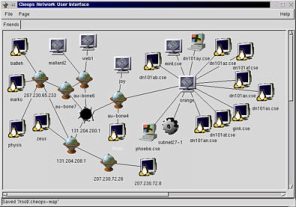

Created by Kurt Seifried, [email protected]
This story is the ongoing saga of Jeff, a tragic tale full of hardship, heartbreak and triumph over impossible odds. Jeff is your average network administrator, responsible for Acme, Inc.'s Microsoft-based corporate network. We start with the basics, but as Jeff's network is broken into again and again, we spiral steadily into madness and insanity.
Jeff has recently been hired at Acme, Inc., makers of fine anvils and the rocket roller skate. The previous network administrator left Acme in the wake of some nasty administrative power struggles.
After some initial legwork, identifying systems and network layout, Jeff finds a sticky note in his new desk:
To do list
- Install printer on 5th floor
- Replace blue patch cables in 3rd floor wire closet with mauve cables
- Secure network
While most of us aren't thrown quite so deep into the water to learn if we will sink or swim, it isn't unheard of for new administrators like Jeff to face this kind of an immediate test.
The first step is assessment. If Jeff doesn't know what he's dealing with, he may end up doing more damage than good. He then has to come up with a list of what needs to be done — everything from simple upgrades to installation of new security-related software.
There are a number of commercial products to help Jeff discover what is on his network, and many free tools as well. For now, I will concentrate on the free ones. Jeff's first task is probably to find out what network address blocks he "owns," i.e., 1.2.3.*, and which internal blocks he is using, such as 10.*. He is unsure, but expects he can find this information from his routers, switches and servers. He simply lists open connections on servers (using netstat) and queries the routers and switches for the IP addresses they are handling. He can then execute ping sweeps, pinging every address within the network blocks in use, to get a list of active IPs. In a perfect world there would be a readily available list of active IPs, also revealing the systems behind them.
Jeff might take advantage of a program called Cheops, ideally suited for laying bare his network. Cheops is billed as a Swiss army knife — it will detect machines on a network, identify their OSes, and even generate a map showing the network's layout. Jeff can download Cheops for free; and it runs on most Unix systems, though Linux is the best bet.

Cheops screenshot (click to enlarge)
Once Jeff knows what is on his network, he is aware he will need to start updating software. It is generally safe to apply the latest service packs on Microsoft products, but some applications break, so Jeff makes sure to test them on a non-critical system first. He could easily download NT service packs, but like most people with Windows 98, he uses the often laborious Windows Update tool. The good news is, Microsoft has a Web page where he can download the actual files, to be saved, so that distributing them to desktop users is much easier.
Being a reasonably lazy administrator — the best kind; more on this later — Jeff decides that automating the above task will be the best course of action. Among a number of products to aid in this, SMS is Microsoft's offering. Having a lot of desktops, Jeff finds SMS well worth the cost. But since implementation is non-trivial, he decides to find someone trained in use of the product.
If he worked for a smaller company, Jeff could kludge up a solution. At the lowest end, he would have an internal Web page for the company with links to the software, where users would click on the links to the executables and install them. Performing this via email would be a bad idea, as users might get used to running executable content ostensibly from administrators. Jeff could also use login scripts for automation. However, some software updates are interactive and will not work so well in this process.
After applying all the service packs to his NT servers and workstations as well as the Win9x clients, Jeff decides it will also be a good idea to upgrade everyone's version of Microsoft Internet Explorer. MSIE is surely among the most used pieces of software in today's world. Windows ships with it by default, and it is — sadly, in my opinion — the best Web browser overall. Unfortunately, it is also chock full of security holes.
If Jeff were an individual user upgrading MSIE, he would need to download a small program (iesetup.exe) that figures out which components to install and where to download them, and then does so. Obviously Jeff doesn't want to walk users through this process, nor does he want to download the same software components several hundred times in the course of a day. This is one area where Microsoft shines. The Internet Explorer Administration Kit is free, reasonably easy to use, and very powerful.
With a deep sigh, Jeff fires up his Web browser and points it to http://www.microsoft.com/windows/ieak/en/default.asp, clicks on Licensing & Registration, then on New user, fills in his data and then downloads the software. On this first run, Jeff learns that it's better to wait for a lull in network activity, as downloading a lot of software takes a while.
The process of creating a package is relatively straightforward. Jeff selects the desired components and configures them: default mail server, proxy server, and so on, reducing the amount of work for users. The corporate version of IEAK (there is also an ISP version) allows him to specify a silent install option, which doesn't prompt the user for information. This is probably the best way to go; if problems arise during the install, most users will not be able to fix them. Again Jeff needs somehow to get the executable to users and have them run it. He determines to go with a login script, followed by an email instructing users to go to an internal Web page and run the executable.
Now that Jeff has solved the basic security problems that afflict most networks, meaning outdated software, it is time to look at another major area of network security. By default in Windows, a username and password are given for login and access to network resources. This works quite well but contains a serious flaw: Users can choose poor passwords, and the default does not stop them. So Jeff logs into his network as an administrator, fires up User manager for domains, and then selects Policies and then Account. If he were to force users to change passwords often, this would annoy them and they would more likely choose bad passwords, or else forget their good ones.
For most environments it is more important to specify a minimum password length — eight characters is a good start — as well as a password uniqueness. Users determined to keep their passwords can just change them, for example to foo, foo1, foo2 and so on, until they have changed enough times to allow reuse of the original password.
Jeff knows his users will probably still use bad passwords (like "acmecorp"), so enabling account lockouts is the next best thing. The big question now becomes whether to lockout the account until an administrator resets it, the more secure option; or to let the account unlock after a certain time period, which is far less hassle. Jeff, not overly concerned about people trying to brute-force passwords or otherwise break in, lets the accounts unlock after a short while. He will encounter far fewer users requiring an administrator to unlock their accounts.
Having accomplished all this, Jeff decides to call it a day. Unbeknownst to him, Carl the cracker — or hacker, in popular mediaspeak — has just woken up and decided to break into Acme's network because he skinned his knee using the patented rocket roller skates. Finding the IP for Acme, Inc.'s Web server, he telnets to port 80 on it and issues "HEAD / HTTP/1.0" followed by two returns, which results in the following output:
HTTP/1.1 200 Ok Server: Microsoft-IIS/4.0 Date: Sat, 25 Nov 2000 23:14:33 GMT Content-Type: text/html Connection closed by foreign host.
Opting for a direct approach, Carl then uses CIS to scan the Web server. Unless Windows is secured, the default configuration will allow him to connect and get lists of usernames, including whether they have passwords or not, the shares available, and so forth. It's too bad the last administrator at Acme didn't set a required password length, because Carl finds several accounts that contain no passwords. He points his Windows box at the Web server using the Run command and "\\1.2.3.4" and is presented with a list of shares, one of them labeled "wwwroot." Going for the throat, he edits the index.html file to read "Owned by the psychedelic cow hugger." Then he deletes all the other files and directories in wwwroot.
Waking up to a ringing phone at 3 a.m. is never fun. Jeff groggily slaps his alarm clock for a bit until he realizes that the phone is the root of the problem, so he answers it. On the other end is Bob in Sales. Bob is on the road and wants to show a customer some of the fine products Acme offers, but the Website appears to have been deleted and all that remains is that single frontpage with the one-line message. He doesn't know what is wrong with it, but he does know that if it doesn't get fixed, he will lose the sale.
Sighing mightily, Jeff gets dressed and drives down to the office. (At least there is no traffic.) Logging in at his workstation, he fires up a Web browser and looks at the Website. After a momentary flash of panic, he settles down and tries to think of what to do. The first priority is restoring the site from backup so that Bob can show it to a client. But what is to prevent the attacker from getting back in? More to the point, how did he get in?
Having found a backup tape and put the site back up, Jeff sits back and ponders how to keep the attacker out. Looking at the event log, he finds nothing very useful, no record of user logins or file accesses. Sighing gently, he goes to User manager for domains, clicks Policies and Audit, enabling auditing on login success and failures. He decides to enable file access logging as well, since he can selectively enable it on directories and files. He logs into the Web server and enables auditing of file access on the wwwroot folder.
Deciding that nothing more can be done, Jeff heads back home for a few hours of sleep.
Meanwhile, Carl heads over to IRC in search of someone to prove his hacking prowess to. He finds several of his friends and directs them to the URL for Acme's Website. They see the restored Website with no apparent damage and they mock him, deeply hurting his feelings. So he repeats the process to get in, and deletes every file in wwwroot, as well as several other shares. He also leaves another message.
Waking up to a ringing phone at 6 a.m. is especially bad when it follows being woken up by a ringing phone at 3 a.m. After listening to Bob's spiel a second time — and Bob is extremely agitated at this point — Jeff heads back in to work. Oozing into his workstation and popping the tab on a can of Jolt (the first of many), he again views the event log. This time there is some useful information. Grinning, Jeff copies the body of an event log message into his email client and drafts a message to Bob.
Bob - found out what happened, someone has broken into our webserver and deleted all the files. They were using an account that does not have a password on it, yours! Here is the evidence from the log file:Object Open: Object Server: Security Object Type: File Object Name: C:\InetPub\wwwroot\default.asp New Handle ID: 884 Operation ID: {0,374580} Process ID: 2157009312 Primary User Name: SYSTEM Primary Domain: NT AUTHORITY Primary Logon ID: (0x0,0x3E7) Client User Name: BOB Client Domain: ACMECORP Client Logon ID: (0x0,0x5A874) Accesses DELETE Privileges -
Please change your password imediately. I will be restoring the site from backup and have temporarily removed your account from the www group.
Sighing happily, Jeff again restores the site backup from tape and considers returning home for some sleep. But his reverie is rudely interrupted by Alice, a VP in accounting, who advises him to be ready in one hour to explain to the board what is going on with the Web server.
Will Jeff survive the board meeting? Will Carl find another account with no password? Will Jeff's wife start unplugging the phone at bedtime? Will Bob be forced to grovel to make the sale?
Join us for the next installment, wherein Jeff does battle with an improperly maintained corporate network.
Reference links
http://www.microsoft.com/NTServer/all/downloads.asp
http://corporate.windowsupdate.microsoft.com/en/default.asp
http://www.microsoft.com/windows/ieak/en/default.asp
Last week Jeff did battle with passwords, and the lack of a password policy at the company. (The November edition of MCP magazine has a good article on password policy. "Change in Time," page 55, covers changing passwords.)
We last left Jeff at the board meeting, where he must cover his heinie or else start looking for a new job — with no recommendation.
Cut to the boardroom. Big shiny table, kitschy artwork, several older white female and male corporate units looking various shades of bored, annoyed and indifferent. Jeff stumbles in with some printouts and a mug of coffee.
| Mr. Pink (CEO): |
About time. What's this I hear about someone breaking into the building and spray-painting the server? |
| Jeff: | (Is spray paint bad for electronics?) Huh? |
| Mr. White (Head of IT): |
It's not my fault. I've been saying for ages we need to spend more money on IT and modernize. |
| Mrs. Brown (Head of marketing): |
Can we make this quick? I have several media inquiries wanting to know if our products are still safe to use. |
| Jeff: | Ahhhh. . . . |
| Mr. White: | Everyone, this is Jeff. He's our new network administrator; he is responsible for the network now. Jeff, why don't you tell us what happened? |
| Lesson #1 |
| Try to avoid technical terms when speaking with "normal" people. They are paying you to deal with the technical stuff, and they want to hear about how the events will affect them. For example, marketing people want something they can use to explain the event to customers and the media. Accounting probably wants to know what it's going to cost. The legal department wants to know about liability and other law-related matters. Remember, these people don't especially care for the gory details, and probably don't wish to be educated enough to understand them — that's your job. |
| Jeff: | Well, this morning at 3 a.m. I received
a call from Bob, who is currently in Europe. He was
trying to access our Website to show a customer a
product, but he found that our Website had been defaced. What this means is that someone broke into our Web server, deleted all the Website-related data and placed a message boasting of their successful attack on us. My first priority was getting the site back online so that Bob could provide the customer with the needed data. I did this by restoring the site from backup tapes. I then attempted to find the method by which the attacker broke in, but was unable to, given the current network setup. I enabled logging on certain events, user account logins, and any type of access to the Website files. If the attack happened again, I would probably have some evidence that could be used to figure out what happened. I then went back home to get some sleep, as I was in no shape to start modifying our network configuration. At 6 a.m. Bob phoned again to say the Website was again defaced. The good news is that the logging enabled me to figure out what happened. The attacker found an account on the server that had no password. They then used it to access our server and modify the files. The account that was used was Bob's. I locked his account out so that the attacker could not use it again, and I told Bob. I also restored the site from tape backups again. |
| Mr. White: | So you successfully fixed the problem? |
| Lesson #2 |
| Honesty is almost always the best policy. Lies will probably come back to haunt you anywise, so you might as well get it over with quickly. |
| Jeff: | No. |
| Mr. White | What do you mean, no? Why do you think we're paying you? |
| Jeff: | The attack was possible and successful because of several security problems. Some of them I fixed — users can no longer have blank passwords, and they must be over 8 letters in length. I also intend to write up a password policy and notify users that they all need to change their passwords. This should solve the immediate problem of an attacker logging into our Web server and modifying files via user accounts with no passwords. I also need to secure the Web server to prevent attackers from being able to connect to it in this manner at all, but this will take a bit of time and effort. |
| Mr. Pink: | So you have the situation under control then? |
| Jeff: | Yes. |
| Mrs. Brown: | So our products are still safe to use? |
| Jeff: | (Are rocket-powered roller skates
"safe"?) Err. . . Yes. |
| Mr. White | How long will it take you to secure the Web server? |
| Jeff: | (Well, considering how bad the state
of security is around here. . . .) I'm not completely sure. At least one week; I may have to reorganize the network a bit. (Do we have a DMZ? I'll have to check.) We may need to order some new hardware and software to do the job right. |
| Mr. White: | I think now might be a good time to bring this up. I've been pushing for an increase in the IT budget, mostly to modernize some of our older systems, but also to secure our network. |
And so on and so forth until Mr. Pink is finally
convinced that it is a good idea. So now that Jeff has
the budget, and a mandate to use it to secure the
network, what should he do? For now, not much —
better to solve the Web server problem first, and then
see what needs to be done. Settling into his chair, Jeff
cracks his knuckles and fires up a Web browser.
Jeff goes to http://www.microsoft.com and plugs "iis security" into the search box. He is rewarded with a number of results, most of them actually useful. One of the better links: http://www.microsoft.com/TechNet/security/iissec.asp. Jeff decides to spend the rest of the day securing the Web server. Most of this task won't be too difficult, just tedious.
As 7 p.m. rolls around, Jeff is grinning to himself. He has implemented most of the security recommendations listed in the Microsoft checklists, which should solve most problems. Time to head home and get a good night's sleep. Jeff is mostly justified in his newfound confidence. The measures you can take to secure your Web server according to Microsoft's checklists will keep out most attackers. However, there is a lot more that you can, and should, do. So will Jeff get a good night's sleep, or will Carl manage to find a way back into the Web server? |
Jeff rolls into the parking lot early, humming happily after a good night's sleep. He sits down at his desk and decides right off to call a staff meeting. He will update them on the recent events, and together they will chart a course for the future.
To: [email protected]
From: [email protected]
Subject: Staff meeting @ 1pm today (Dec 8)
Ok folks, it's time for a meeting (sorry, but it has to be done). As you all know our webserver was broken into (twice), and because of that, it looks like our budget will be increased, their are other updates to discuss as well.
-Jeff
| Lesson #4 |
| Don't call a meeting unless you need to, and make sure everyone knows why they must attend — otherwise, why should they bother? And slate the meeting for a time after people have been fed. They'll be in a much better mood. |
At the staff meeting:
| Jeff: | OK folks. As you all know, our Web server got hacked twice. This was partially due to a user having no password on their account. Other factors — well, lack of a properly configured firewall, improper server configuration, out-of-date user and group configuration. So, we've plugged some of the immediate holes. Now it's time to look at long-term solutions. I've been reviewing the IT department, and I'm not quite clear on some points. First of all, who is in charge of software updates? |
| Andy: | Well, the server admins are, for the servers, but the desktops are under the support group. . . and they have to do updates manually, same as the server admin group. |
| Jeff: | So updates are done manually? 'Kay. . . . Who is in charge of network design? |
| Bryan: | The guy you replaced was. But, um, I don't think he knew quite what he was doing. |
| Jeff: | Why is that? |
| Bryan: | I saw him reading Networking for Dummies. |
| Jeff: | OK. . . . And who is in charge of the firewalls? |
| Bryan: | He was in charge of them, as well. |
| Jeff: | (Now this explains a few things.) OK, now what projects have you people been working on, or looking at doing? |
| Andy: | I've been looking at replacing all our existing NT servers with Windows 2000. |
| Jeff: | Yes, makes sense. We're going to have to bite that bullet sooner or later. |
| Bryan: | I've been looking at wireless networking, internally here for boardrooms; also possibly at some plants, to reduce wiring costs. |
| Jeff: | All right. Good way to save on basic expenses. OK, who's next? |
| Cindy: | PKI and fingerprint scanners. I've been considering ways to improve our authentication systems and reduce support costs. |
| Jeff: | Ah. Anything else? |
| Cindy: | Well— Actually, never mind. |
| Jeff: | No, please, what? |
| Cindy: | Well, our existing network infrastructure is in a bit of a mess, right? |
| Jeff: | (Say something polite.) Right. |
| Cindy: | Instead of fixing what we have, some of which is pretty old, I was thinking we might just replace it all. |
| Jeff: | Unh. . . OK. We'll have to look into that. |
| Lesson #5 |
| Sometimes it's better to burn down the house and build a new one, before the old one catches fire on its own. |
| Jeff: | One more thing. When is the last time any of you guys, and gal, received funds for training? |
| Dave: | I didn't know we had any funds for training. |
| Jeff: | (Welcome to the Titanic, sir. Would
you like a cabin near the lifeboat station?) We do now, I think. All right then. If that's it, I'll start sorting things out and assigning tasks later today. |
Jeff paces back to his office. What is the meaning of it all? Seated in his now-familiar chair, he begins to prioritize the problems facing Acme, and the solutions those problems will require.
| Lesson #6 |
| Implementing an expensive PKI solution makes little sense if you've failed to take care of such basic security matters as software updates. |
The list sits on Jeff's desk, defying him. He looks out the window. Wistful, he gazes at the grass, wondering if he could re-carpet his office with it. He reckons this will have to wait until a long weekend. Returning to the list, he sorts through which problems carry the highest priority, and which promise the quickest solutions.
Unfortunately, they don't appear to match up, no matter how creative Jeff's solutions are. Ultimately he decides that software updates are the biggest problem. He types up a quick memo:
To: [email protected]
From: [email protected]
Subject: Software updates
I have decided that software updates are our largest imediate problem. Also by solving this issue we will make life a lot easier in the long run when it comes to deploying new software packages. The solution to this problem is in several parts:
- We need to identify the hardware and software we curently have deployed
- We need to identify who is in charge of it and what it is for
- We need to identify software products that will allow us to update the software
- We need to restructure the support group and server admin group, I feel that the support group should be doing support, not manual software updates (I think they'll agree).
- We need to identify which version and patch level we will use for our major software packages (such as Windows, Office, etc.)
- We should setup a test lab so that we can test software updates
- We should standardize software packages and versions as much as possible
So to start the ball rolling, anyone who knows what is installed and what versions of software are running as well as who "owns" it, is requested to document this and submit it to me. If could put it in the form:
- primary IP adress
- primary hostname
- OS
- Version
- who is in charge
- what is it for
- major software packages installed on it
- secondary IP adresses
- secondary hostnames
If possible, plese send this in an Excel spreadsheet. That would be apreciated.
-Jeff
Jeff hits Send and purses his lips contentedly. Then he fires up his Web browser and turns to the next task at hand. The search for software to help automate software updates is never pleasant, especially in a Windows environment. On some subconscious level, Jeff is weighing the odds that he will end up running SMS from Microsoft.
He knows SMS is pretty much the only game in town. He picks up the phone and calls a local consulting company with whom he has done good business in the past.
| Lesson #7 |
| Hiring a consultant can be a lot like getting married. Down the line, everything may go smoothly and everyone be happy; or things may end horribly with lawsuits and hurt feelings. More than a consultant's skills are important; also consider their work ethic, experience, and so on. |
Jeff unlocks the door of his charcoal gray Mercedes-Benz ML 55 AMG with a smile on his face. A free man yet, oblivious to the hand of fate. . . .
Last updated on 3/07/2002
Copyright Kurt Seifried 2002